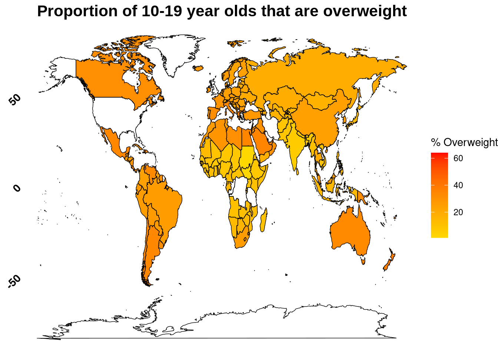
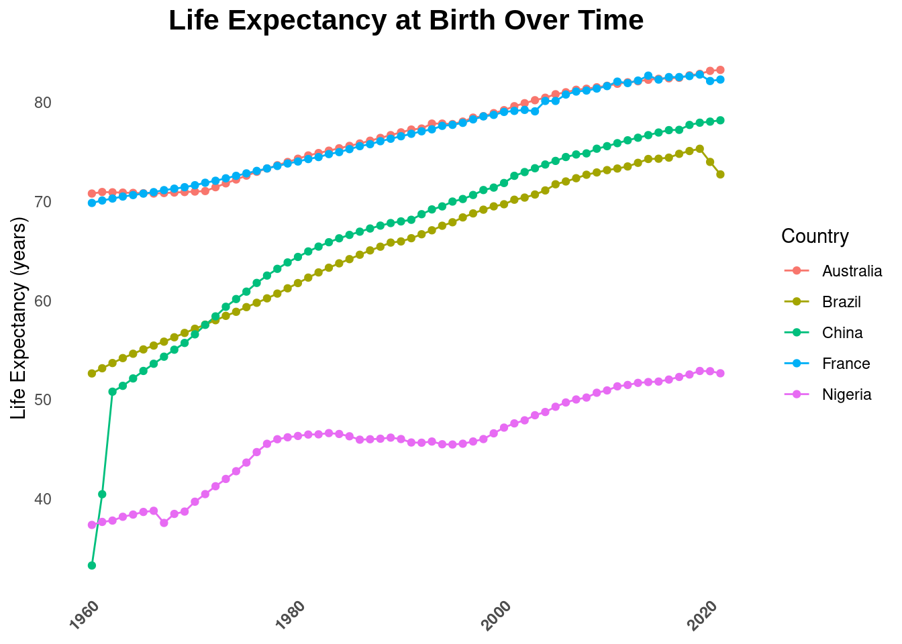
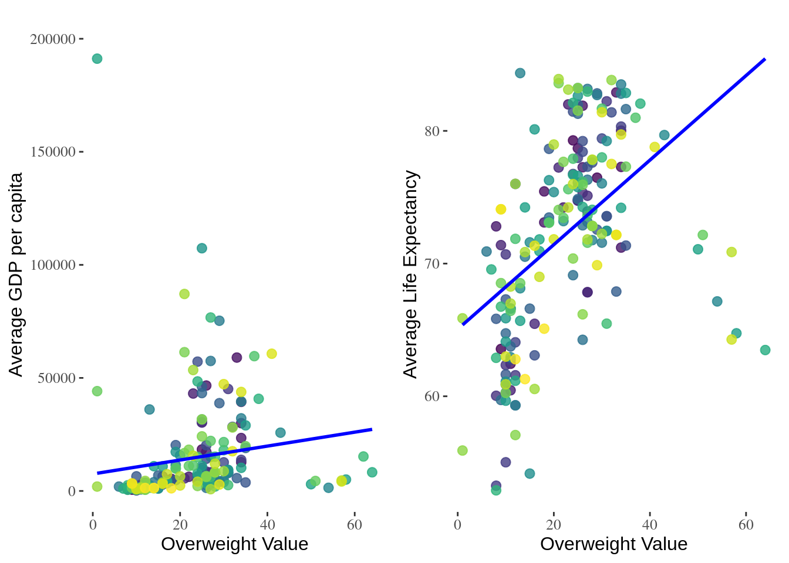

Empowering Change: Shaping the Health Landscape for Young Minds
Global Trends and Insights from 2019
Introduction

As a Data Analyst for UNICEF, I am tasked with elucidating global challenges through the analytical lens of data. This report addresses a critical and escalating issue: the increasing percentage of overweight among adolescents aged 10-19.
Objectives
- Highlight the Magnitude: We aim to bring to light the severe magnitude of this health crisis.
- Engage the Community: Encourage an open dialogue within the global community towards finding actionable solutions.
- Unravel Multifaceted Drivers: Conduct a comprehensive analysis of data to understand the complex factors driving this trend.
- Advocate for Effective Strategies: Promote strategies that will safeguard the well-being of our youth, ensuring a healthier future trajectory.
Call to Action
This document is not merely informational but serves as an urgent call to action. We invite stakeholders from all levels to engage actively in the vital mission of reversing this concerning trend. Together, we can forge a path towards a healthier future for the next generation.
General Health Landscape
Time Series Analysis

Economic Analysis
GDP & Life Expectancy Visualisation

Bar Chart
This code creates an interactive bar chart showing the average observed overweight percentage for five selected countries (Brazil, China, Nigeria, France, Australia) for the year 2019. Each country’s data is represented by a bar, colored uniquely according to a custom palette, with countries ordered by their average overweight value. The visualization aims to compare overweight rates across these nations, highlighting differences in this health indicator within a specific year.
Conclusion
Throughout this report, several critical dimensions of global health have been explored, with a particular focus on the challenges posed by the increasing overweight rates among adolescents. Key insights from our visualizations include:
- Highlighting Disparities: Our data visualizations reveal significant disparities in health outcomes across different regions and demographics.
- Economic Correlations: The analysis suggests potential correlations between health metrics like overweight rates and economic factors, such as GDP per capita.
As we look to the future, collaborative engagement across various sectors is essential. Key actions include:
- Leveraging Data-Driven Insights: Utilizing the insights provided by our comprehensive data analysis to inform public health policies and interventions.
- Implementing Effective Interventions: Developing and deploying strategies that can effectively address the health challenges identified.
This report is intended as a starting point for deeper analysis and action, aimed at fostering a healthier future for the next generation. We invite stakeholders from all levels to partake in this vital mission to reverse concerning health trends and enhance the well-being of our youth.